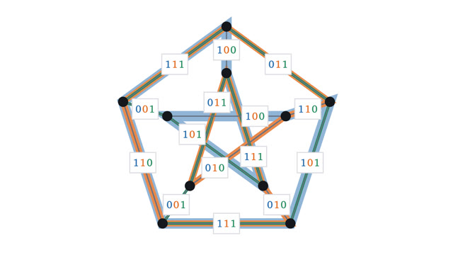

AI Proofs
Proofs found by AI models, worked through from the definitions.
Each set of lessons takes one proof found by an AI model and works through all of it, with the earlier human results it depends on named and either proved or sketched. The first three lessons are one argument: the cycle double cover conjecture and why it is hard, the labels that were known since the 1970s, and the step from labels back to cycles that closed it in 2026.
Start with lesson 1-
1
The cycle double cover conjecture: bridges and paintCan cycles be laid on a graph so that every edge is used exactly twice? What the conjecture says, why bridges block it, and how far three colors get.

-
2
Nowhere-zero flows and the cycle double cover conjectureGive every paint a code of bits and label each edge with the difference of its two coats. Why such labels always exist, and why they are only half a proof.

-
3
Proof of the cycle double cover conjectureThe step that was missing for fifty years. Why the paints chosen at each node can always be made to agree, by counting the two ends of every edge.